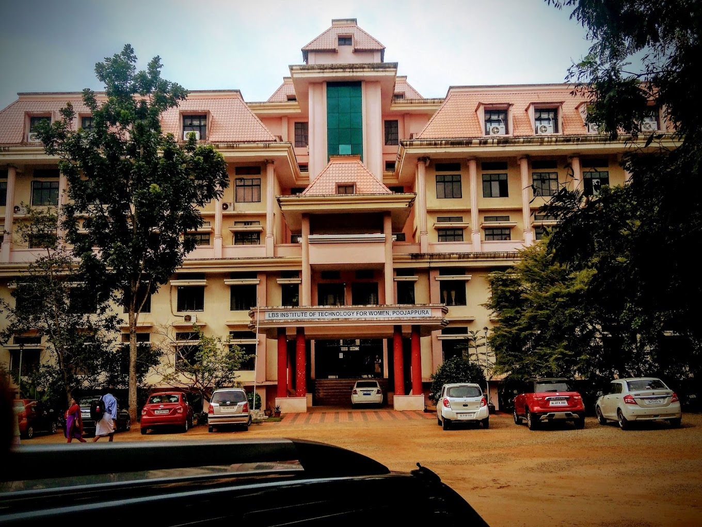

Welcome to the Department of Information Technology at LBSITW,Trivandrum

Information Technology (IT) engineering, also known as Information Technology Engineering or IT Engineering,
is a multidisciplinary field that combines principles from computer science, electrical engineering,
and management to design, develop, implement, and manage various IT systems and technologies.
IT engineers play a crucial role in enabling organizations to effectively use technology to achieve their goals and objectives.
VISION
To be a renowned academic and research centre in Computer Science and allied domains.
MISSION
To impart quality technical education by providing a conductive learning and research ambience for moulding ethically responsible engineers,academicians and researchers catering to the needs of industry and society.
What will you like to know about our department
(Click the Choice!)